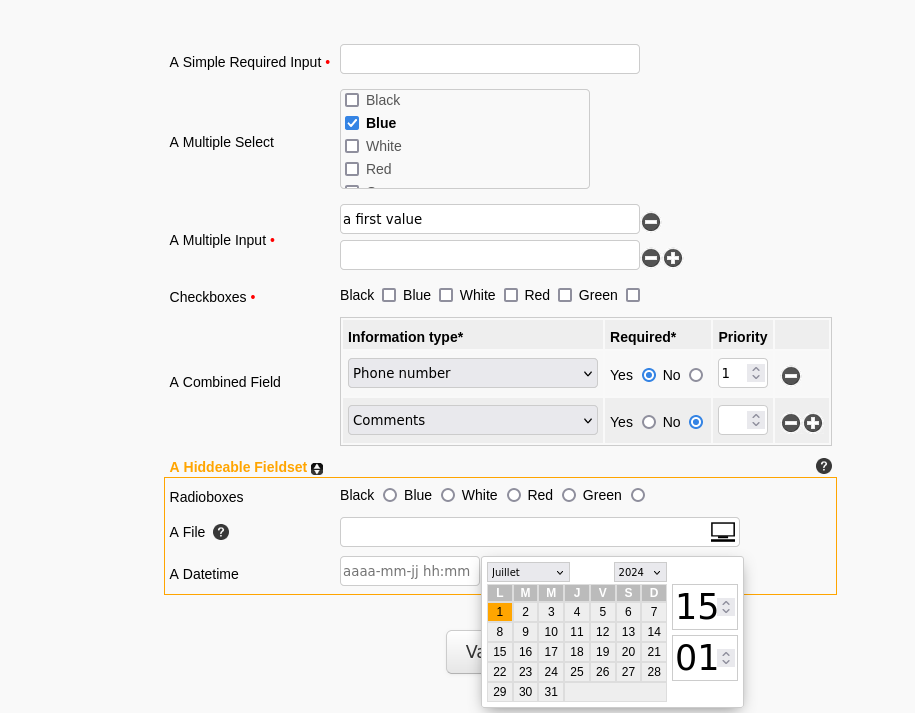

MForm
Overview
MForm is a PHP class for displaying forms from a configuration file that is easier to write than the generated HTML and offers many built-in features.
With a php code like this :
$form = mlib\ui\form\MFormFactory::createFromFile(__DIR__."/path/to/form.conf");
$form->registerAssetsPath("path/to/assets_libs/mlib/MForm/");
$form->display();
and a "form.conf" file (see below), here's the kind of form that can be created :

As we can see, these are simple vertical forms, but MForm provides access to several features such as combined fields, multiple fields, help buttons, and more, as we will see.
The configuration file that allowed this form to be generated : mform_sample.conf
The configuration file
The configuration files for MForm are MConfig files (see here).
They consist of a succession of blocks like this :
<form_field_name>
type = the_type
display = the_label
...
...
</form_field_name>
Common parameters, whatever the type :
Required :
- type : one of the values : hidden, input, number, email, password, text, checkbox, radio, select, file, date, datetime, time, complex, custom
- display : the label to be displayed next to the form field
Optional :
- required (bool) : indicates if the field is required or not
- disabled (bool) : indicates if the field is disabled or not. Only taken into account if the form is in edit mode
- help : a URL that returns the help content for the field, which will be loaded via AJAX in a modal box
- default_value : a default value
Depending on the type specified, a certain number of other directives will be required or optional.
input
The type input corresponds to an input type text in html. It is a simple one-line text field.
Optional parameters :
- width : allows to specify a width in pixels
- placeholder : allows to put an indication in filigrane when the field is empty
- multi (bool) : allows the user to specify multiple values by adding lines thanks to a "+" to the right of the field
Same as type input, but the html type will be email. There will be no difference if the browser validation is disabled (see here)
number
The type number corresponds to an input type number in html.
Optional parameters :
- width : allows to specify a width in pixels
- placeholder : allows to put an indication in filigrane when the field is empty
- multi (bool) : allows the user to specify multiple values by adding lines thanks to a "+" to the right of the field
- step :
- min :
- max :
password
The type password corresponds to an input type password in html.
Optional parameters :
- width : allows to specify a width in pixels
- placeholder : allows to put an indication in filigrane when the field is empty
text
The type text corresponds to a textarea in html.
Required parameters :
- nb_lines : the number of lines of the textarea
Optional parameters :
- width : allows to specify a width in pixels
- placeholder : allows to put an indication in filigrane when the field is empty
select
The type select corresponds to a select in html.
Required parameters :
- options (config) : a configuration block for the select values (see here)
Optional parameters :
- width : allows to specify a width in pixels
- multi (bool) : indicates if the select is multiple. The functionality is implemented differently : we switch to checkboxes presented in a dropdown list for a more user-friendly interface than holding down the ctrl key.
- nb_lines : number of visible lines if multi
checkbox
The type checkbox corresponds to an input type checkbox in html.
Required parameters :
- options (config) : a configuration block for the checkbox values (see here)
radio
The type radio corresponds to an input type radio in html.
Required parameters :
- options (config) : a configuration block for the radio button values (see here)
date
The type date corresponds to an input type date. A date picker appears when you click on the field.
Parameters (all optional):
- format : a string among :
- 'Y-m-d' (default)
- 'd-m-Y'
- 'Y/m/d'
- 'd/m/Y'
- min : the minimum accepted date (today if not specified)
- max : the maximum accepted date (today + 1 year if not specified)
min and max can be dates in the specified format (Y-m-d by default) or well
- Y or Y ± N (with N an integer) : the 1st January (min) or the 31st December (max) of the year ± N years
- M or M ± N (with N an integer) : the 1st (min) or last (max) day of the month ± N months
- D or D ± N (with N an integer) : today ± N days
Examples :
min = D # from today
max = D+365 # at the horizon of a year
min = Y-1 # the first January of the previous year
max = Y+1 # the 31st December of the following year
datetime
Same as date, but with the options of format :
- 'Y-m-d H:i' (default)
- 'd-m-Y H:i'
- 'Y/m/d H:i'
- 'd/m/Y H:i'
time
The type time is an hour in 24h format : 00:00 → 23:59
No option
file
The type file corresponds to an input type file.
Optional parameters :
- width : allows to specify a width in pixels
In edit mode, if a value is specified for a field of this type, this value (name of a file) will be displayed in the placeholder of the field as an indication, but the field will be empty if a new file is not loaded by the user. It is not possible to pre-fill an input type file.
complex
The type complex allows to aggregate (to combine) different fields between them.
Each set of values represents a value of the combined field.
Required parameters :
- one or more configs of the fields that compose the combined field
Optional parameters :
- multi (bool) : if we can specify several values of the combined field or not
custom
The type custom allows to make a custom form field (if no other type suits what we want to do).
For this, we will have to write a php class that inherits from MForm, in which we will write a method charged of displaying the form field. We will indicate the name of this method in a parameter of the field configuration.
Required parameters :
- function : the name of the method to call to display the field
The "options" block for the select, checkbox and radio types
The "options" block must contain the "type" parameter which can take one of the two following values :
- constant : the list of options is always the same. It must be indicated in the block (see below)
- custom : the list of options is dynamic. It will be specified at execution through the setCustomOptions method (see below). We will use this method if the elements of a dropdown list are stored in a database, for example.
If the type is "constant", it must then specify the 2 following parameters :
- values : the values of the options separated by "/" (Ex : 1/2/3)
- displays : the labels of these options separated by "/" in the same order (Ex : red/green/blue)
Example of a select with constant options :
<field_name>
type = select
display = Choose a value # what is displayed next to the field, equivalent to a label
<options>
type = constant
values = 1/2/3
displays = red/green/blue
</options>
</field_name>
Example of a select with dynamic options at execution :
<field_name>
type = select
display = Choose a value # what is displayed next to the field, equivalent to a label
<options>
type = custom
</options>
</field_name>
Example of using setCustomOptions :
$form = mlib\ui\form\MFormFactory::createFromFile(__DIR__."/path/to/form.conf");
$form->registerAssetsPath("path/to/assets_libs/mlib/MForm/");
$values = $database->getValuesOrderByValues(); // for example
$labels = $database->getLabelsOrderByValues(); // for example
$form_options = array(
'my_select_with_dynamic_options' => array('values' => $values, 'displays' => $labels)
// other options for other fields could be set here
);
$form->setCustomOptions($form_options);
$form->display();
Extras
Aides
As mentioned above, we can specify a url for each form field to display a help.
We use the help parameter for this.
We can also use the help_width and help_height parameters to specify the modal box dimensions.
Fieldsets
We can group form fields into fieldsets simply by enclosing these fields in a named tag fieldset*
The name of the fielset has no value. That is to say, we can give it any name we want, the only constraint being that two fieldsets cannot have the same name.
Example :
<fieldset_1>
hiddeable
display = A Fieldset
help = path/to/help_for_fieldset.txt
<field1>
....
</field1>
<field2>
...
</field2>
</fieldset_1>
We can see here that there are options for fieldsets :
* display : the label that will be displayed
* hiddeable (boolean): if the fieldset can be collapsed or not
* help : see above, same as for a form field
Submit and action
Outside of all form fields and fieldsets, we can specify the action parameter at the root of the configuration file if the processing url of the form is not the same as the form url.
We can also specify a special submit block to modify the value of the validation button of the form and/or add a captcha.
Example:
<submit>
display = Send
captcha = path/to/something/which/generate/an/image
</submit>
If there is a captcha, the code that will have generated the image must have stored the code in the session.
The code entered by the user will be found in the mform_captcha field at form reception.